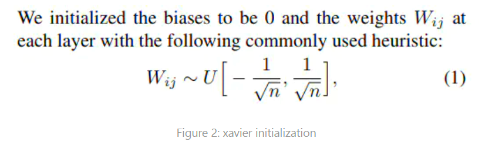

pytorch权重初始化
张量生成
【全零张量】
torch.zeros((a,b,...))
xavier 初始化
pytorch提供了uniform和normal两种

使用normalize 进行初始化，随着网络的加深，梯度会消失。
假设 y=ax+b=w1x1+w2x2+...+wnxn+b
对于y取方差有 var(y)=var(w1x1)+var(w2x1)+var(w2x1)+var(b)=var(y)=N∗var(wi)∗var(xi)
所以，kaiming_normal 在初始化的时候让w在的分布都除以了√n1, 来使得通过了全连接层的输出是和X同分布的。
kaiming 初始化
针对ReLu 激活函数，有一般的输出，会被变成0，为了保持方差不变，会采用kaiming激活函数。在初始化的时候让w在的分布除以了√n2，就是在原来 xavier 初始化的基础上进行乘了个sqrt(2)。
【kaiming_normal_】
std=√fan_modegain
【kaiming_uniform_】
bound=gain×√fan_mode3